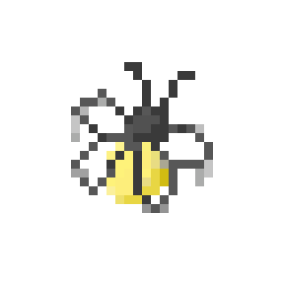
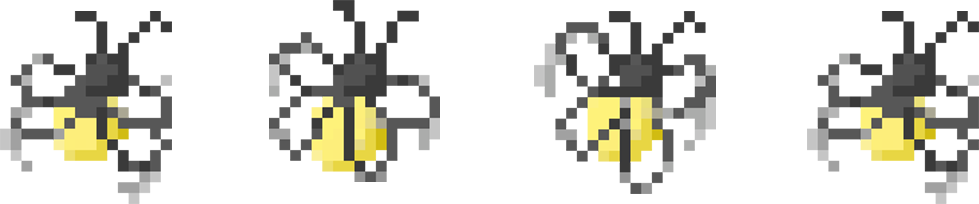
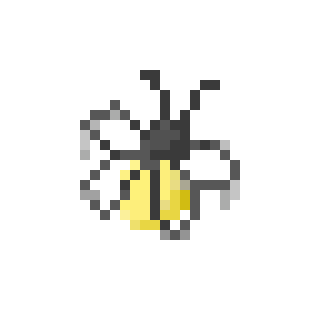
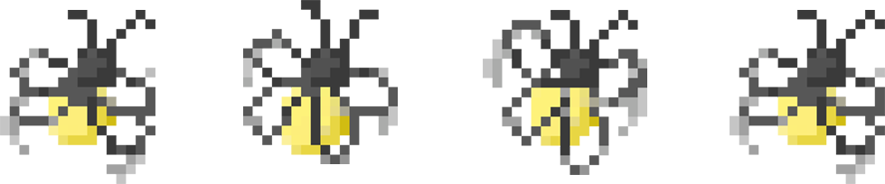

Inspiration
As a Photography enthusiasts passionate about capturing the natural scenery, I deeply appreciate the solace that nature brings to our soul, something unattainable in industrialized cities. Earth is a miracle in the vast universe. I'll never forget the desire to find terrestrial planets when playing "No man's sky". I believe the earth will always be the Eden for human beings. However, in the 21st century, environmental conservation becomes a tool in political struggles, it seems the word is willing to ignore the harms should have been eliminated…

 


